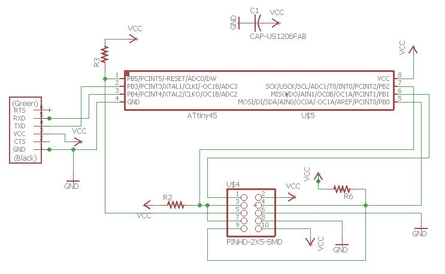
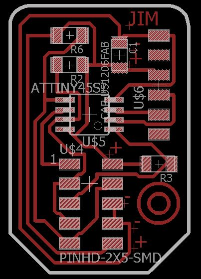
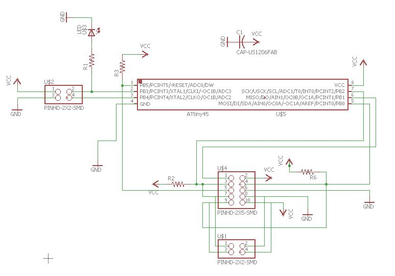
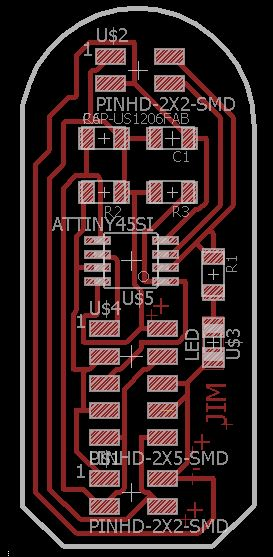
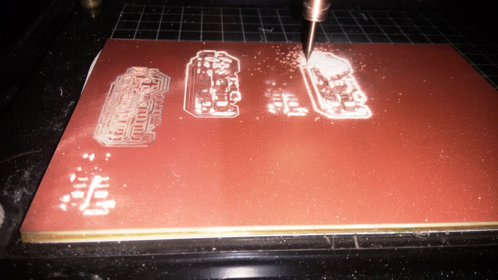
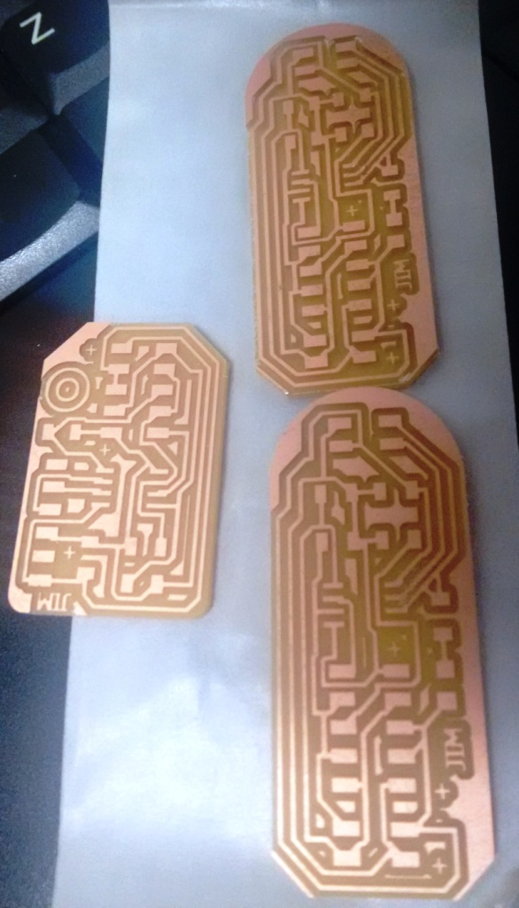
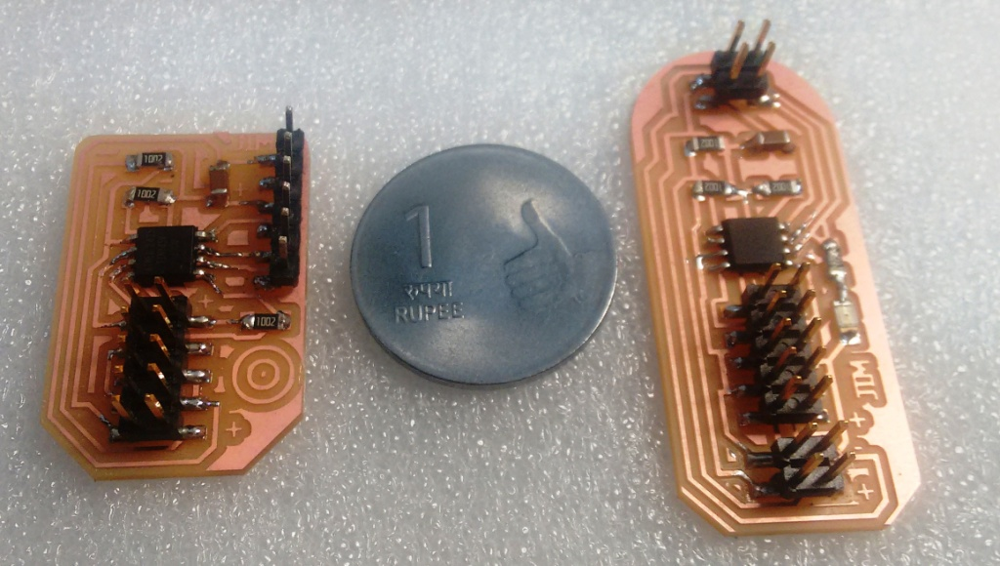
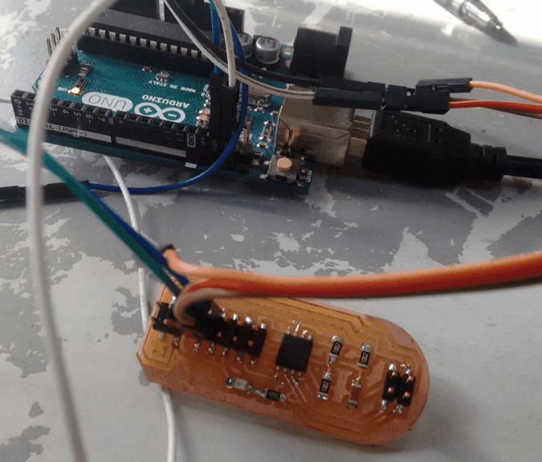

This weeks assignment is to design and build a wired &/or wireless network connecting at least two processors. My plan is to use the I2C protocol
I used Autodesk Eagle to Design the Board for this week. The board is based out of Neil's board available here. First I made the Master board and then the Node board. The schematics and Board designs are in the images below.




I have milled and stuffed the boards using the modella. The photos of the boards are shown below.



With the help of my fab mates, I have tried coding the boards using Arduino IDE. I was not able to make the attiny45 as the master. So finally an Arduino is made as the master and the board I have made as the slave(node). So upon receiving 1, the led on the node swithes ON. The image and code is available below.

This week, I have learned the basics of embedded networking and commiunication and designed and build the boards to demonstrate the I2C communication protocol.
The Eagle design files and the codes for this week is available here.
{kind=link}